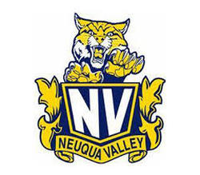
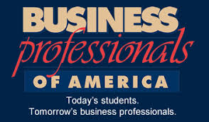
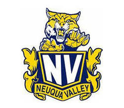
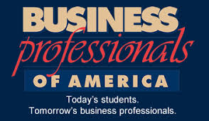

My Future Endeavors:
For my future endeavors pertaining to my career goals, I would like to work as a solutions architect at a new and upcoming technological firm; At this company, I want to be able to craft new and innovative solutions to clients using established technological tools. Also, I hope to inspire more young girls like myself become more confident in their abilities and challenge them to go outside their comfort zones and what is deemed as their academic limit or boundary. As a young girl, I always felt like I couldn’t live up to my true potential as I was too afraid to express my hidden fascinations and talents and try new things that girls my age normally didn’t do; Some of these things include participating in STEM activities, learning more about the fields of engineering, and expressing creative outlets through different problem solving strategies. Taking this into consideration, I want to help more girls realize that there is no limit to their academic endeavors and by inciting the sense of curiosity in girls at a young age, I want to help more girls grow into individuals who have a lifelong love of learning more about what they are passionate about.
My Experiences:
Girls Tennis: Have been an athlete on the Girls Tennis team throughout high school (School Year(s): 2015 to 2017)
Student Council: Have been an active member in this club from freshman year; Through this club, I, and the rest of the Student Council members, have aimed to make an impact on school activities, enhance school spirit, and increase student involvement in school affairs. (School Year(s): 2015 to 2018)
UNICEF: I have actively went to meetings since the beginning of my sophomore year, and it has opened my eyes to how many children all over the world are in need of basic necessities that I take for granted every day. From participating in fundraisers, taking an active role of participating in community service events, and making phone calls to congressmen as young proponents of change, as a member of UNICEF I have tried to achieve our mission of putting children first and have helped to fight global poverty. (School Year(s): 2016 to 2018)
Business Professionals of America: Joined this club my Junior year of high school, and it has helped me thrive in multiple aspects of my life that require public speaking. (School Year(s): 2017-2018)
Girls Who Code Summer Immersion Program Alumnus: This summer, I was selected as one of 20 girls to to attend the selective SIP program at AT&T with Girls Who Code, where I was also mentored by AT&T employees. By the end of the program, I programmed many applications using Python, Java Script, HTML, Google Maps API, Django, and CSS with my team. (June to August 2018)
 


